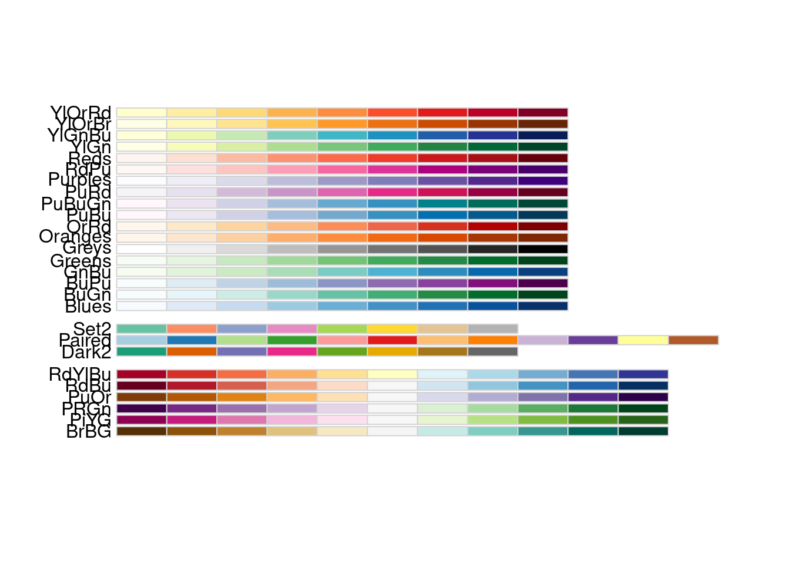

Chapter 4 Effective data visualization
4.1 Overview
This chapter will introduce concepts and tools relating to data visualization beyond what we have seen and practiced so far. We will focus on guiding principles for effective data visualization and explaining visualizations independent of any particular tool or programming language. In the process, we will cover some specifics of creating visualizations (scatter plots, bar charts, line graphs, and histograms) for data using R.
4.2 Chapter learning objectives
By the end of the chapter, readers will be able to:
- Describe when to use the following kinds of visualizations to answer specific questions using a data set:
- scatter plots
- line plots
- bar plots
- histogram plots
- Given a data set and a question, select from the above plot types and use R to create a visualization that best answers the question
- Given a visualization and a question, evaluate the effectiveness of the visualization and suggest improvements to better answer the question
- Referring to the visualization, communicate the conclusions in non-technical terms
- Identify rules of thumb for creating effective visualizations
- Define the three key aspects of ggplot objects:
- aesthetic mappings
- geometric objects
- scales
- Use the
ggplot2package in R to create and refine the above visualizations using:- geometric objects:
geom_point,geom_line,geom_histogram,geom_bar,geom_vline,geom_hline - scales:
scale_x_continuous,scale_y_continuous - aesthetic mappings:
x,y,fill,colour,shape - labelling:
xlab,ylab,labs - font control and legend positioning:
theme - subplots:
facet_grid
- geometric objects:
- Describe the difference in raster and vector output formats
- Use
ggsaveto save visualizations in.pngand.svgformat
4.3 Choosing the visualization
4.3.0.1 Ask a question, and answer it
The purpose of a visualization is to answer a question about a data set of interest. So naturally, the first thing to do before creating a visualization is to formulate the question about the data you are trying to answer. A good visualization will clearly answer your question without distraction; a great visualization will suggest even what the question was itself without additional explanation. Imagine your visualization as part of a poster presentation for a project; even if you aren’t standing at the poster explaining things, an effective visualization will convey your message to the audience.
Recall the different data analysis questions from the first chapter. With the visualizations we will cover in this chapter, we will be able to answer only descriptive and exploratory questions. Be careful not to try to answer any predictive, inferential, causal or mechanistic questions, as we have not learned the tools necessary to do that properly just yet.
As with most coding tasks, it is totally fine (and quite common) to make mistakes and iterate a few times before you find the right visualization for your data and question. There are many different kinds of plotting graphics available to use. For the kinds we will introduce in this book, the general rules of thumb are:
- line plots visualize trends with respect to an independent, ordered quantity (e.g. time)
- histograms visualize the distribution of one quantitative variable (i.e., all its possible values and how often they occur)
- scatter plots visualize the distribution / relationship of two quantitative variables
- bar plots visualize comparisons of amounts
All types of visualization have their (mis)uses, but three kinds are usually hard to understand or are easily replaced with an oft-better alternative. In particular, you should avoid pie charts; it is generally better to use bars, as it is easier to compare bar heights than pie slice sizes. You should also not use 3-D visualizations, as they are typically hard to understand when converted to a static 2-D image format. Finally, do not use tables to make numerical comparisons; humans are much better at quickly processing visual information than text and math. Bar plots are again typically a better alternative.
4.4 Refining the visualization
4.4.0.1 Convey the message, minimize noise
Just being able to make a visualization in R with ggplot2 (or any other tool for that matter) doesn’t mean that it effectively communicates your message to others. Once you have selected a broad type of visualization to use, you will have to refine it to suit your particular need.
Some rules of thumb for doing this are listed below. They generally fall into two classes: you want to make your
visualization convey your message, and you want to reduce visual noise as much as possible. Humans have limited cognitive ability
to process information; both of these types of refinement aim to reduce the mental load on your audience when viewing your visualization,
making it easier for them to understand and remember your message quickly.
Convey the message
- Make sure the visualization answers the question you have asked most simply and plainly as possible.
- Use legends and labels so that your visualization is understandable without reading the surrounding text.
- Ensure the text, symbols, lines, etc., on your visualization are big enough to be easily read.
- Ensure the data are clearly visible; don’t hide the shape/distribution of the data behind other objects (e.g. a bar).
- Make sure to use colour schemes that are understandable by those with colourblindness (a surprisingly large fraction of the overall population). For example, colorbrewer.org and the
RColorBrewerR package provide the ability to pick such colour schemes, and you can check your visualizations after you have created them by uploading to online tools such as the colour blindness simulator. - Redundancy can be helpful; sometimes conveying the same message in multiple ways reinforces it for the audience.
Minimize noise
- Use colours sparingly. Too many different colours can be distracting, create false patterns, and detract from the message.
- Be wary of overplotting. If your plot has too many dots or lines and starts to look like a mess, you need to do something different.
- Only make the plot area (where the dots, lines, bars are) as big as needed. Simple plots can be made small.
- Don’t adjust the axes to zoom in on small differences. If the difference is small, show that it’s small!
4.5 Creating visualizations with ggplot2
4.5.0.1 Build the visualization iteratively
This section will cover examples of how to choose and refine a visualization given a data set and a question that you want to answer,
and then how to create the visualization in R using ggplot2. To use the ggplot2 package, we need to load the tidyverse metapackage.
library(tidyverse)4.5.1 The Mauna Loa CO2 data set
The Mauna Loa CO2 data set, curated by Dr. Pieter Tans, NOAA/GML and Dr. Ralph Keeling, Scripps Institution of Oceanography records the atmospheric concentration of carbon dioxide (CO2, in parts per million) at the Mauna Loa research station in Hawaii from 1959 onwards (Tans and Keeling 2020).
Question: Does the concentration of atmospheric CO2 change over time, and are there any interesting patterns to note?
# mauna loa carbon dioxide data
co2_df <- read_csv("data/mauna_loa.csv") |>
filter(ppm > 0, date_decimal < 2000)
co2_df## # A tibble: 495 x 4
## year month date_decimal ppm
## <dbl> <dbl> <dbl> <dbl>
## 1 1958 3 1958.2 315.71
## 2 1958 4 1958.3 317.45
## 3 1958 5 1958.4 317.5
## 4 1958 7 1958.5 315.86
## 5 1958 8 1958.6 314.93
## 6 1958 9 1958.7 313.2
## 7 1958 11 1958.9 313.33
## 8 1958 12 1959.0 314.67
## 9 1959 1 1959.0 315.62
## 10 1959 2 1959.1 316.38
## # … with 485 more rowsSince we are investigating a relationship between two variables (CO2 concentration and date), a scatter plot is a good place to start. Scatter plots
show the data as individual points with x (horizontal axis) and y (vertical axis) coordinates. Here, we will use the decimal
date as the x coordinate
and CO2 concentration as the y coordinate. When using the ggplot2 package, we create the plot object with the ggplot function; there are
a few basic aspects of a plot that we need to specify:
- the data: the name of the data frame object that we would like to visualize
- here, we specify the
co2_dfdata frame
- here, we specify the
- the aesthetic mapping: tells
ggplothow the columns in the data frame map to properties of the visualization- to create an aesthetic mapping, we use the
aesfunction - here, we set the plot
xaxis to thedate_decimalvariable, and the plotyaxis to theppmvariable
- to create an aesthetic mapping, we use the
- the geometric object: specifies how the mapped data should be displayed
- to create a geometric object, we use a
geom_*function (see the ggplot reference for a list of geometric objects) - here, we use the
geom_pointfunction to visualize our data as a scatterplot
- to create a geometric object, we use a
co2_df data.
Figure 4.1: Creating a scatterplot with the ggplot function
We could pass many other possible arguments to the aesthetic mapping and geometric object to change how the plot looks. For the purposes of quickly testing things out to see what they look like, though, we can just go with the default settings:
co2_scatter <- ggplot(co2_df, aes(x = date_decimal, y = ppm)) +
geom_point()
co2_scatterFigure 4.2: Scatter plot of atmospheric concentration of CO2 over time
Certainly, the visualization in Figure 4.2 shows a clear upward trend in the atmospheric concentration of CO2 over time.
This plot answers the first part of our question in the affirmative, but that appears to be the only conclusion one can make from the scatter visualization.
However, since time is an ordered quantity, we can try using a line plot instead using the geom_line function. Line plots require
that their x coordinate orders the data, and connect the sequence of x and y coordinates with line segments. Let’s again try this with just
the default arguments:
co2_line <- ggplot(co2_df, aes(x = date_decimal, y = ppm)) +
geom_line()
co2_lineFigure 4.3: Line plot of atmospheric concentration of CO2 over time
Aha! Figure 4.3 shows us there is another interesting phenomenon in the data: in addition to increasing over time, the concentration seems to oscillate as well. Given the visualization as it is now, it is still hard to tell how fast the oscillation is, but nevertheless, the line seems to be a better choice for answering the question than the scatter plot was. The comparison between these two visualizations illustrates a common issue with scatter plots: often, the points are shown too close together or even on top of one another, muddling information that would otherwise be clear (overplotting).
Now that we have settled on the rough details of the visualization, it is time to refine things. This plot is fairly straightforward, and there is not much
visual noise to remove. But there are a few things we must do to improve clarity, such as adding informative axis labels and making the font a more readable size.
To add axis labels, we use the xlab and ylab functions. To change the font size, we use the theme function with the text argument:
co2_line <- ggplot(co2_df, aes(x = date_decimal, y = ppm)) +
geom_line() +
xlab("Year") +
ylab("Atmospheric CO2 (ppm)") +
theme(text = element_text(size = 18))
co2_line
Figure 4.4: Line plot of atmospheric concentration of CO2 over time with clearer axes and labels
Finally, let’s see if we can better understand the oscillation by changing the visualization slightly. Note that it is totally fine to use a small number of visualizations to answer different aspects of the question you are trying to answer. We will accomplish
this by using scales, another important feature of ggplot2 that easily transforms the different variables and set limits.
We scale the horizontal axis using the scale_x_continuous function, and the vertical axis with the scale_y_continuous function.
We can transform the axis by passing the trans argument, and set limits by passing the limits argument. In particular, here, we
will use the scale_x_continuous function with the limits argument to zoom in on just five years of data (say, 1990-1995):
co2_line <- ggplot(co2_df, aes(x = date_decimal, y = ppm)) +
geom_line() +
xlab("Year") +
ylab("Atmospheric CO2 (ppm)") +
scale_x_continuous(limits = c(1990, 1995)) +
theme(text = element_text(size = 18))
co2_lineFigure 4.5: Line plot of atmospheric concentration of CO2 from 1990 to 1995 only
Interesting! It seems that each year, the atmospheric CO2 increases until it reaches its peak somewhere around April, decreases until around late September, and finally increases again until the end of the year. In Hawaii, there are two seasons: summer from May through October, and winter from November through April. Therefore, the oscillating pattern in CO2 matches up fairly closely with the two seasons.
4.5.2 The island landmass data set
The islands.csv data set contains a list of Earth’s landmasses as well as their area (in thousands of square miles) (McNeil 1977).
Question: Are the continents (North / South America, Africa, Europe, Asia, Australia, Antarctica) Earth’s seven largest landmasses? If so, what are the next few largest landmasses after those?
# islands data
islands_df <- read_csv("data/islands.csv")
islands_df## # A tibble: 48 x 2
## landmass size
## <chr> <dbl>
## 1 Africa 11506
## 2 Antarctica 5500
## 3 Asia 16988
## 4 Australia 2968
## 5 Axel Heiberg 16
## 6 Baffin 184
## 7 Banks 23
## 8 Borneo 280
## 9 Britain 84
## 10 Celebes 73
## # … with 38 more rowsHere, we have a list of Earth’s landmasses, and are trying to compare their sizes. The right type of visualization to answer this
question is a bar plot, specified by the geom_bar function in ggplot2. However, by default, geom_bar sets the heights
of bars to the number of times a value appears in a data frame (its count); here, we want to plot exactly the values in the data frame, i.e.,
the landmass sizes. So we have to pass the stat = "identity" argument to geom_bar:
islands_bar <- ggplot(islands_df, aes(x = landmass, y = size)) +
geom_bar(stat = "identity")
islands_barFigure 4.6: Bar plot of all Earth’s landmasses’ size with squished labels
Alright, not bad! The plot in Figure 4.6 is definitely the right kind of visualization, as we can clearly see and compare sizes of landmasses. The major issues are that the smaller landmasses’ sizes are hard to distinguish, and the names of the landmasses are obscuring each other as they have been squished into too little space. But remember that the question we asked was only about the largest landmasses; let’s make the plot a little bit clearer by keeping only the largest 12 landmasses. We do this using the slice_max function.
Then to help us make sure the labels have enough space, we’ll use horizontal bars instead of vertical ones. We do this by swapping the x and y variables:
islands_top12 <- slice_max(islands_df, order_by = size, n = 12)
islands_bar <- ggplot(islands_top12, aes(x = size, y = landmass)) +
geom_bar(stat = "identity")
islands_barFigure 4.7: Bar plot of size for Earth’s largest 12 landmasses
The plot in Figure 4.7 is definitely clearer now, and allows us to answer our question (“are the top 7 largest landmasses continents?”) in
the affirmative. But the question could be made clearer from the plot by organizing the bars not by alphabetical order
but by size, and to colour them based on whether they are a continent. To do this, we
use mutate to add a column to the data regarding whether or not the landmass is a continent:
islands_top12 <- slice_max(islands_df, order_by = size, n = 12)
continents <- c("Africa", "Antarctica", "Asia", "Australia", "Europe", "North America", "South America")
islands_ct <- mutate(islands_top12, is_continent = ifelse(landmass %in% continents, "Continent", "Other"))
islands_ct## # A tibble: 12 x 3
## landmass size is_continent
## <chr> <dbl> <chr>
## 1 Asia 16988 Continent
## 2 Africa 11506 Continent
## 3 North America 9390 Continent
## 4 South America 6795 Continent
## 5 Antarctica 5500 Continent
## 6 Europe 3745 Continent
## 7 Australia 2968 Continent
## 8 Greenland 840 Other
## 9 New Guinea 306 Other
## 10 Borneo 280 Other
## 11 Madagascar 227 Other
## 12 Baffin 184 OtherIn order to colour the bars, we add the fill argument to the aesthetic mapping. Then we use the reorder
function in the aesthetic mapping to organize the landmasses by their size variable.
Finally, we use the labs and theme functions to add labels, change the font size, and position the legend:
islands_bar <- ggplot(islands_ct, aes(x = size, y = reorder(landmass, size), fill = is_continent)) +
geom_bar(stat = "identity") +
labs(x = "Size (1000 square mi)", y = "Landmass", fill = "Type") +
theme(text = element_text(size = 18), legend.position = c(0.75, 0.45))
islands_barFigure 4.8: Bar plot of size for Earth’s largest 12 landmasses coloured by whether its a continent with clearer axes and labels
The plot in Figure 4.8 is now a very effective visualization for answering our original questions. Landmasses are organized by their size, and continents are coloured differently than other landmasses, making it quite clear that continents are the largest seven landmasses.
4.5.3 The Old Faithful eruption/waiting time data set
The faithful data set contains measurements of the waiting time between eruptions and the subsequent eruption duration (in minutes). The faithful data set is available in base R under the name faithful so it does not need to be loaded.
Question: Is there a relationship between the waiting time before an eruption to the duration of the eruption?
# old faithful eruption time / wait time data
faithful## # A tibble: 272 x 2
## eruptions waiting
## <dbl> <dbl>
## 1 3.6 79
## 2 1.8 54
## 3 3.333 74
## 4 2.283 62
## 5 4.533 85
## 6 2.883 55
## 7 4.7 88
## 8 3.6 85
## 9 1.95 51
## 10 4.35 85
## # … with 262 more rowsHere again, we investigate the relationship between two quantitative variables (waiting time and eruption time). But if you look at the output of the data frame, you’ll notice that neither of the columns are ordered. So, in this case, let’s start again with a scatter plot:
faithful_scatter <- ggplot(faithful, aes(x = waiting, y = eruptions)) +
geom_point()
faithful_scatterFigure 4.9: Scatter plot of waiting time and eruption time
We can see in Figure 4.9 the data tend to fall into two groups: one with short waiting and eruption times, and one with long waiting and eruption times. Note that in this case, there is no overplotting: the points are generally nicely visually separated, and the pattern they form is clear. In order to refine the visualization, we need only to add axis labels and make the font more readable:
faithful_scatter <- ggplot(faithful, aes(x = waiting, y = eruptions)) +
geom_point() +
labs(x = "Waiting Time (mins)", y = "Eruption Duration (mins)") +
theme(text = element_text(size = 18))
faithful_scatterFigure 4.10: Scatter plot of waiting time and eruption time with clearer axes and labels
4.5.4 The Canadian languages data set
We will return to the can_lang data set (Timbers 2020), which contains counts of languages from the 2016 Canadian census.
Question: Is there a relationship between the number of people who speak a language as their mother tongue and the number of people who speak that language as their primary spoken language at home? And is there a pattern in the strength of this relationship in the higher-level language categories (Official languages, Aboriginal languages, or non-official and non-Aboriginal languages)?
can_lang <- read_csv("data/can_lang.csv")
can_lang## # A tibble: 214 x 6
## category language mother_tongue most_at_home most_at_work lang_known
## <chr> <chr> <dbl> <dbl> <dbl> <dbl>
## 1 Aboriginal languages Aboriginal language… 590 235 30 665
## 2 Non-Official & Non-Aborig… Afrikaans 10260 4785 85 23415
## 3 Non-Official & Non-Aborig… Afro-Asiatic langua… 1150 445 10 2775
## 4 Non-Official & Non-Aborig… Akan (Twi) 13460 5985 25 22150
## 5 Non-Official & Non-Aborig… Albanian 26895 13135 345 31930
## 6 Aboriginal languages Algonquian language… 45 10 0 120
## 7 Aboriginal languages Algonquin 1260 370 40 2480
## 8 Non-Official & Non-Aborig… American Sign Langu… 2685 3020 1145 21930
## 9 Non-Official & Non-Aborig… Amharic 22465 12785 200 33670
## 10 Non-Official & Non-Aborig… Arabic 419890 223535 5585 629055
## # … with 204 more rowsWe will begin with a scatter plot of the mother_tongue and most_at_home columns from our data frame.
ggplot(can_lang, aes(x = most_at_home, y = mother_tongue)) +
geom_point()Figure 4.11: Scatter plot of number of Canadians reporting a language as their mother tongue vs the primary language at home
To improve the interpretability of the data visualization in Figure 4.11 we should replace the default axis names with a more informative labels. We can use \n to create a line break in the axis names so the words after \n are printed on a new line. This will make the axes labels on the plots more readable.
ggplot(can_lang, aes(x = most_at_home, y = mother_tongue)) +
geom_point() +
xlab("Language spoken most at home \n (number of Canadian residents)") +
ylab("Mother tongue \n (number of Canadian residents)")Figure 4.12: Scatter plot of number of Canadians reporting a language as their mother tongue vs the primary language at home with x and y labels
Most of the data points from the 214 observations in this data set are bunched up in the lower left-handside of the visualization in Figure 4.12. The data is clumped because many more people in Canada speak the two languages represented by the points in the upper right corner. By filtering the data, we can confirm these two points correspond to the two official languages (English and French):
can_lang |>
filter(language == "English" | language == "French")## # A tibble: 2 x 6
## category language mother_tongue most_at_home most_at_work lang_known
## <chr> <chr> <dbl> <dbl> <dbl> <dbl>
## 1 Official languages English 19460850 22162865 15265335 29748265
## 2 Official languages French 7166700 6943800 3825215 10242945To answer our question, we will need to adjust the scale of the x and y axes so that they are on a log scale. Doing this can help make patterns in the data more interpretable.
ggplot(can_lang, aes(x = most_at_home, y = mother_tongue)) +
geom_point() +
xlab("Language spoken most at home \n (number of Canadian residents)") +
ylab("Mother tongue \n (number of Canadian residents)") +
scale_x_log10(labels = scales::comma) +
scale_y_log10(labels = scales::comma)Figure 4.13: Scatter plot of number of Canadians reporting a language as their mother tongue vs the primary language at home with log adjusted x and y axes
Here we are adjusting the scale of the x and y axes on a \(log\) scale with base 10. Notice that \(log_{10}(10) = 1\), \(log_{10}(100) = 2\), and \(log_{10}(1000) = 3\). On the logarithmic scale, the values 10, 100 and 1000 are all the same distance apart so we see that applying this function is moving big values closer together and moving small values farther apart. Therefore by adjusting the scale in this way we are highlighting the differences between small values, which allows us to better see the relationship in Figure 4.13. Log transformations are not the only way you can transform the data! Notice if you write
log(0)in R you get-Infso if you have lots of zeros in your data you will want to do something else, which is beyond the scope of the book.
From the visualization in Figure 4.13, we see that for the 214 languages in this data set, as the number of people who have a language as their mother tongue increases, so does the number of people who speak that language at home. When we see two variables do this, we call this a positive relationship. Because the points are fairly close together, we can say that the relationship is strong. Because drawing a straight line through these points would fit the pattern we observe quite well, we say that it’s linear.
Similar to our example in chapter 1, we can convert the counts to percentages to make them more understandable. Changing the units allows us to better interpret the numbers in our data set. We can do this by dividing the number of people reporting a given language as their mother tongue or primary language at home by the number of people who live in Canada and multiplying by 100%. For example, the percentage of people who reported that their mother tongue was English in the 2016 Canadian census was 19,460,850 / 35,151,728 \(\times\) 100 % = 55.4%.
Below we use mutate to calculate the percentage of people reporting a given language as their mother tongue and primary language at home for all the languages in the can_lang data set. Since the new columns are appended to the end of the data table, we selected the new columns after the transformation so you can clearly see the mutated output from the table.
can_lang <- can_lang |>
mutate(
mother_tongue_percent = (mother_tongue / 35151728)*100,
most_at_home_percent = (most_at_home / 35151728)*100
)
can_lang |>
select(mother_tongue_percent, most_at_home_percent)## # A tibble: 214 x 2
## mother_tongue_percent most_at_home_percent
## <dbl> <dbl>
## 1 0.0016784 0.00066853
## 2 0.029188 0.013612
## 3 0.0032715 0.0012659
## 4 0.038291 0.017026
## 5 0.076511 0.037367
## 6 0.00012802 0.000028448
## 7 0.0035845 0.0010526
## 8 0.0076383 0.0085913
## 9 0.063909 0.036371
## 10 1.1945 0.63591
## # … with 204 more rowsFinally, let’s visualize the data now that we have represented it as percentages (and change our axis labels to reflect this change in units!):
ggplot(can_lang, aes(x = most_at_home_percent, y = mother_tongue_percent)) +
geom_point() +
xlab("Language spoken most at home \n (percentage of Canadian residents)") +
ylab("Mother tongue \n (percentage of Canadian residents)") +
scale_x_log10(labels = scales::comma) +
scale_y_log10(labels = scales::comma)Figure 4.14: Scatter plot of percentage of Canadians reporting a language as their mother tongue vs the primary language at home
Now we’ll move onto the second part of our exploratory data analysis question: when considering the relationship between the number of people who have a language as their mother tongue and the number of people who speak that language at home, is there a pattern in the strength of this relationship in the higher-level language categories (Official languages, Aboriginal languages, or non-official and non-Aboriginal languages)? One common way to explore this is to colour the data points on the scatter plot we have already created by group. For example, given that we have the higher-level language category for each language recorded in the 2016 Canadian census, we can colour the points in our previous scatter plot to represent each language’s higher-level language category.
Here we want to distinguish the values according to the category group with which they belong.
We can add an argument to the aes function, specifying that the category column should colour the points. Adding this argument will colour the points according to their group and add a legend at the side of the plot.
ggplot(can_lang, aes(x = most_at_home_percent, y = mother_tongue_percent, color = category)) +
geom_point() +
xlab("Language spoken most at home \n (percentage of Canadian residents)") +
ylab("Mother tongue \n (percentage of Canadian residents)") +
scale_x_log10(labels = scales::comma) +
scale_y_log10(labels = scales::comma)Figure 4.15: Scatter plot of percentage of Canadians reporting a language as their mother tongue vs the primary language at home coloured by language category
In Figure 4.15, the points are coloured with the default ggplot2 colour palette. But what if you want to use different colours? In R, one package that provides alternative colour palettes is RColorBrewer (Neuwirth 2014). You can visualize the list of colour palettes that RColorBrewer has to offer with the display.brewer.all() function. You can also print a list of colour blind friendly palettes by adding colorblindFriendly = T to the function.
library(RColorBrewer)
display.brewer.all(colorblindFriendly = T)
From the output above, we can choose the colour palette we want to use in our plot.
To change the colour palette, we add the scale_colour_brewer() layer indicating the palette we want to use.
ggplot(can_lang, aes(x = most_at_home_percent, y = mother_tongue_percent, color = category)) +
geom_point() +
xlab("Language spoken most at home \n (percentage of Canadian residents)") +
ylab("Mother tongue \n (percentage of Canadian residents)") +
scale_x_log10(labels = scales::comma) +
scale_y_log10(labels = scales::comma) +
scale_color_brewer(palette = "RdYlBu")Figure 4.16: Scatter plot of percentage of Canadians reporting a language as their mother tongue vs the primary language at home coloured by language category with colour blind friendly colours
You can use this color blindness simulator to check if your visualizations are colour blind friendly.
From the visualization in Figure 4.16, we can now clearly see that not just a lot, but that the majority of Canadians reported one of the official languages as their mother tongue and as the language they speak most often at home.
What do we see when considering the second part of our exploratory question? Do we see a difference in the pattern of the relationship between the number of people who speak a language as their mother tongue and the number of people who speak a language as their primary spoken language at home between higher-level language categories? Probably not!
For each higher-level language category, there appears to be a positive relationship between the number of people who speak a language as their mother tongue and the number of people who speak a language as their primary spoken language at home. This relationship looks similar, regardless of the category.
Does this mean that this relationship is positive for all languages in the world? Can we use this data visualization on its own to predict how many people have a given language as their mother tongue if we know how many people speak it as their primary language at home? The answer to both these questions is “no.” However, with exploratory data analysis, we can create new hypotheses, ideas, and questions (like the ones at the beginning of this paragraph). Answering those questions would likely involve gathering additional data and doing more complex analyses, which we will see more of later in this book.
Now, we can go one step further and distinguish English and French languages with different colours in our visualization. To separate these languages, we will filter the rows where the language is either English or French and mutate the category column to equal the corresponding language.
english_and_french <- can_lang |>
filter(language == "English" | language == "French") |>
mutate(category = language)
english_and_french## # A tibble: 2 x 8
## category language mother_tongue most_at_home most_at_work lang_known mother_tongue_percent
## <chr> <chr> <dbl> <dbl> <dbl> <dbl> <dbl>
## 1 English English 19460850 22162865 15265335 29748265 55.362
## 2 French French 7166700 6943800 3825215 10242945 20.388
## # … with 1 more variable: most_at_home_percent <dbl>Next we will bind the mutated data set english_and_french that we just created with the remaining rows in the can_lang data set:
can_lang <- bind_rows(
english_and_french,
can_lang |>
filter(language != "English" & language != "French")
)We have added a few more layers to make the data visualization in Figure 4.17 even more effective. Specifically, we used have improved the visualizations accessibility by choosing colours that are easier to distinguish, mapped category to shape, and handled the problem of overlapping data points by making them slightly transparent.
ggplot(can_lang, aes(
x = most_at_home_percent,
y = mother_tongue_percent,
colour = category,
shape = category
)) + # map categories to different shapes
geom_point(alpha = 0.6) + # set the transparency of the points
xlab("Language spoken most at home \n (percentage of Canadian residents)") +
ylab("Mother tongue \n (percentage of Canadian residents)") +
scale_x_log10(labels = scales::comma) +
scale_y_log10(labels = scales::comma) +
scale_color_brewer(palette = "RdYlBu")Figure 4.17: Scatter plot of percentage of Canadians reporting a language as their mother tongue vs the primary language at home coloured by language category
4.5.5 The Michelson speed of light data set
The morley data set contains measurements of the speed of light (in kilometres per second with 299,000 subtracted) from the year 1879
for five experiments, each with 20 consecutive runs (Michelson 1882). This data set is available in base R under the name morley so it does not need to be loaded.
Question: Given what we know now about the speed of light (299,792.458 kilometres per second), how accurate were each of the experiments?
# michelson morley experimental data
morley## # A tibble: 100 x 3
## Expt Run Speed
## <int> <int> <int>
## 1 1 1 850
## 2 1 2 740
## 3 1 3 900
## 4 1 4 1070
## 5 1 5 930
## 6 1 6 850
## 7 1 7 950
## 8 1 8 980
## 9 1 9 980
## 10 1 10 880
## # … with 90 more rowsIn this experimental data, Michelson was trying to measure just a single quantitative number (the speed of light). The data set
contains many measurements of this single quantity. To tell how accurate the experiments were, we need to visualize the
distribution of the measurements (i.e., all their possible values and how often each occurs). We can do this using a histogram. A histogram helps us visualize how a
particular variable is distributed in a data set by separating the data into bins, and then using vertical bars
to show how many data points fell in each bin. To create a histogram in ggplot2 we will use the geom_histogram geometric
object, setting the x axis to the Speed measurement variable; and as we did before, let’s use the default arguments just to see how things look:
morley_hist <- ggplot(morley, aes(x = Speed)) +
geom_histogram()
morley_histFigure 4.18: Histogram of Michelson’s speed of light data
Figure 4.18 is a great start. However, we cannot tell how accurate the measurements are using this visualization unless we can see what the true value is.
In order to visualize the true speed of light, we will add a vertical line with the geom_vline function, setting the xintercept argument
to the true value. There is a similar function, geom_hline, that is used for plotting horizontal lines. Note that vertical lines
are used to denote quantities on the horizontal axis, while horizontal lines are used to denote quantities on the vertical axis.
morley_hist <- ggplot(morley, aes(x = Speed)) +
geom_histogram() +
geom_vline(xintercept = 792.458, linetype = "dashed", size = 1.0)
morley_histFigure 4.19: Histogram of Michelson’s speed of light data with vertical line indicating true speed of light
In Figure 4.19, we also still cannot tell which experiments (denoted in the Expt column) led to which measurements; perhaps some experiments were more accurate than
others. To fully answer our question, we need to separate the measurements from each other visually. We can
try to do this using a coloured histogram, where counts from different experiments are stacked on top of each
other in different colours. We can create a histogram coloured by the Expt variable by adding it to the fill aesthetic mapping. We make sure the different colours can be seen (despite them all sitting on top of each other) by setting the alpha argument in geom_histogram
to 0.5 to make the bars slightly translucent:
morley_hist <- ggplot(morley, aes(x = Speed, fill = Expt)) +
geom_histogram(position = "identity", alpha = 0.5) +
geom_vline(xintercept = 792.458, linetype = "dashed", size = 1.0)
morley_histFigure 4.20: Histogram of Michelson’s speed of light data coloured by experiment
Wait a second, we notice that the histogram is still all the same colour! What is going on here? If we look at the printed morley data, the column Expt is an integer (we see the label <int> underneath the Expt column name). But, we want to treat it as a categorical variable. To fix this issue we can write factor(Expt) in the fill aesthetic mapping. By writing factor(Expt) we are ensuring that R will treat this variable as a factor and the colour will be mapped discretely.
morley_hist <- ggplot(morley, aes(x = Speed, fill = Expt)) +
geom_histogram(position = "identity", alpha = 0.5) +
geom_vline(xintercept = 792.458, linetype = "dashed", size = 1.0)
morley_histFigure 4.21: Histogram of Michelson’s speed of light data coloured by experiment as factor
Factors impact plots in two ways: (1) ensuring a colour is mapped as discretely where appropriate (like in this example) and (2) the ordering of levels in a plot.
ggplottakes into account the order of the factor levels as opposed to the order that is displayed in your data frame. Learning how to reorder your factor levels will help you with reordering the labels of a factor on a plot.
Unfortunately, the attempt to separate out the experiment number visually has created a bit of a mess. All of the colours in Figure 4.20 are blending together, and although it is possible to derive some insight from this (e.g., experiments 1 and 3 had some of the most incorrect measurements), it isn’t the clearest way to convey our message and answer the question. Let’s try a different strategy of creating multiple separate histograms on top of one another.
In order to create a plot in ggplot2 that has multiple subplots arranged in a grid, we use the facet_grid function.
The argument to facet_grid specifies the variable(s) used to split the plot into subplots. It has the syntax vertical_variable ~ horizontal_variable,
where veritcal_variable is used to split the plot vertically, horizontal_variable is used to split horizontally, and . is used if there should be no split
along that axis. In our case, we only want to split vertically along the Expt variable, so we use Expt ~ . as the argument to facet_grid.
morley_hist <- ggplot(morley, aes(x = Speed, fill = factor(Expt))) +
geom_histogram(position = "identity") +
facet_grid(Expt ~ .) +
geom_vline(xintercept = 792.458, linetype = "dashed", size = 1.0)
morley_histFigure 4.22: Histogram of Michelson’s speed of light data split vertically by experiment
The visualization in Figure 4.22 now makes it quite clear how accurate the different experiments were with respect to one another.
There are two finishing touches to make this visualization even clearer. First and foremost, we need to add informative axis labels
using the labs function, and increase the font size to make it readable using the theme function. Second, and perhaps more subtly, even though it
is easy to compare the experiments on this plot to one another, it is hard to get a sense
for just how accurate all the experiments were overall. For example, how accurate is the value 800 on the plot, relative to the true speed of light?
To answer this question, we’ll use the mutate function to transform our data into a relative measure of accuracy rather than absolute measurements:
morley_rel <- mutate(morley, relative_accuracy = 100 * ((299000 + Speed) - 299792.458) / (299792.458))
morley_hist <- ggplot(morley_rel, aes(x = relative_accuracy, fill = factor(Expt))) +
geom_histogram(position = "identity") +
facet_grid(Expt ~ .) +
geom_vline(xintercept = 0, linetype = "dashed", size = 1.0) +
labs(x = "Relative Accuracy (%)", y = "# Measurements", fill = "Experiment ID") +
theme(text = element_text(size = 18))
morley_histFigure 4.23: Histogram of relative accuracy split vertically by experiment with clearer axes and labels
Wow, impressive! These measurements of the speed of light from 1879 had errors around 0.05% of the true speed. Figure 4.23 shows you that even though experiments 2 and 5 were perhaps the most accurate, all of the experiments did quite an admirable job given the technology available at the time.
4.6 Explaining the visualization
4.6.0.1 Tell a story
Typically, your visualization will not be shown entirely on its own, but rather it will be part of a larger presentation. Further, visualizations can provide supporting information for any aspect of a presentation, from opening to conclusion. For example, you could use an exploratory visualization in the opening of the presentation to motivate your choice of a more detailed data analysis / model, a visualization of the results of your analysis to show what your analysis has uncovered, or even one at the end of a presentation to help suggest directions for future work.
Regardless of where it appears, a good way to discuss your visualization is as a story:
- Establish the setting and scope, and motivate why you did what you did.
- Pose the question that your visualization answers. Justify why the question is important to answer.
- Answer the question using your visualization. Make sure you describe all aspects of the visualization (including describing the axes). But you
can emphasize different aspects based on what is important to answer your question:
- trends (lines): Does a line describe the trend well? If so, the trend is linear, and if not, the trend is nonlinear. Is the trend increasing, decreasing, or neither? Is there a periodic oscillation (wiggle) in the trend? Is the trend noisy (does the line “jump around” a lot) or smooth?
- distributions (scatters, histograms): How spread out are the data? Where are they centered, roughly? Are there any obvious “clusters” or “subgroups,” which would be visible as multiple bumps in the histogram?
- distributions of two variables (scatters): is there a clear / strong relationship between the variables (points fall in a distinct pattern), a weak one (points fall in a pattern but there is some noise), or no discernible relationship (the data are too noisy to make any conclusion)?
- amounts (bars): How large are the bars relative to one another? Are there patterns in different groups of bars?
- Summarize your findings, and use them to motivate whatever you will discuss next.
Below are two examples of how one might take these four steps in describing the example visualizations that appeared earlier in this chapter. Each of the steps is denoted by its numeral in parentheses, e.g. (3).
Mauna Loa Atmospheric CO2 Measurements: (1) Many current forms of energy generation and conversion—from automotive engines to natural gas power plants—rely on burning fossil fuels and produce greenhouse gases, typically primarily carbon dioxide (CO2), as a byproduct. Too much of these gases in the Earth’s atmosphere will cause it to trap more heat from the sun, leading to global warming. (2) In order to assess how quickly the atmospheric concentration of CO2 is increasing over time, we (3) used a data set from the Mauna Loa observatory from Hawaii, consisting of CO2 measurements from 1959 to the present. We plotted the measured concentration of CO2 (on the vertical axis) over time (on the horizontal axis). From this plot, you can see a clear, increasing, and generally linear trend over time. There is also a periodic oscillation that occurs once per year and aligns with Hawaii’s seasons, with an amplitude that is small relative to the growth in the overall trend. This shows that atmospheric CO2 is clearly increasing over time, and (4) it is perhaps worth investigating more into the causes.
Michelson Light Speed Experiments: (1) Our modern understanding of the physics of light has advanced significantly from the late 1800s when Michelson and Morley’s experiments first demonstrated that it had a finite speed. We now know based on modern experiments that it moves at roughly 299792.458 kilometres per second. (2) But how accurately were we first able to measure this fundamental physical constant, and did certain experiments produce more accurate results than others? (3) To better understand this we plotted data from 5 experiments by Michelson in 1879, each with 20 trials, as histograms stacked on top of one another. The horizontal axis shows the accuracy of the measurements relative to the true speed of light as we know it today, expressed as a percentage. From this visualization, you can see that most results had relative errors of at most 0.05%. You can also see that experiments 1 and 3 had measurements that were the farthest from the true value, and experiment 5 tended to provide the most consistently accurate result. (4) It would be worth further investigating the differences between these experiments to see why they produced different results.
4.7 Saving the visualization
4.7.0.1 Choose the right output format for your needs
Just as there are many ways to store data sets, there are many ways to store visualizations and images. Which one you choose can depend on several factors, such as file size/type limitations (e.g., if you are submitting your visualization as part of a conference paper or to a poster printing shop) and where it will be displayed (e.g., online, in a paper, on a poster, on a billboard, in talk slides). Generally speaking, images come in two flavours: bitmap (or raster) formats and vector (or scalable graphics) formats.
Bitmap / Raster images are represented as a 2-D grid of square pixels, each with its own colour. Raster images are often compressed before storing so they take up less space. A compressed format is lossy if the image cannot be perfectly recreated when loading and displaying, with the hope that the change is not noticeable. Lossless formats, on the other hand, allow a perfect display of the original image.
- Common file types:
- Open-source software: GIMP
Vector / Scalable Graphics images are represented as a collection of mathematical objects (lines, surfaces, shapes, curves). When the computer displays the image, it redraws all of the elements using their mathematical formulas.
- Common file types:
- Open-source software: Inkscape
Raster and vector images have opposing advantages and disadvantages. A raster image of a fixed width / height takes the same amount of space and time to load regardless of what the image shows (caveat: the compression algorithms may shrink the image more or run faster for certain images). A vector image takes space and time to load corresponding to how complex the image is, since the computer has to draw all the elements each time it is displayed. For example, if you have a scatter plot with 1 million points stored as an SVG file, it may take your computer some time to open the image. On the other hand, you can zoom into / scale up vector graphics as much as you like without the image looking bad, while raster images eventually start to look “pixellated.”
PDF files: The portable document format PDF (
Let’s investigate how different image file formats behave with a scatter plot of the Old Faithful data set (Hardle 1991):
library(svglite) # we need this to save SVG files
faithful_plot <- ggplot(data = faithful, aes(x = waiting, y = eruptions)) +
geom_point()
faithful_plot
Figure 4.24: Scatter plot of waiting time and eruption time
ggsave("faithful_plot.png", faithful_plot)
ggsave("faithful_plot.jpg", faithful_plot)
ggsave("faithful_plot.bmp", faithful_plot)
ggsave("faithful_plot.tiff", faithful_plot)
ggsave("faithful_plot.svg", faithful_plot)
print(paste("PNG filesize: ", file.info("faithful_plot.png")["size"] / 1000000, "MB"))
## [1] "PNG filesize: 0.134178 MB"
print(paste("JPG filesize: ", file.info("faithful_plot.jpg")["size"] / 1000000, "MB"))
## [1] "JPG filesize: 0.370329 MB"
print(paste("BMP filesize: ", file.info("faithful_plot.bmp")["size"] / 1000000, "MB"))
## [1] "BMP filesize: 3.148978 MB"
print(paste("TIFF filesize: ", file.info("faithful_plot.tiff")["size"] / 1000000, "MB"))
## [1] "TIFF filesize: 9.443904 MB"
print(paste("SVG filesize: ", file.info("faithful_plot.svg")["size"] / 1000000, "MB"))
## [1] "SVG filesize: 0.030047 MB"Wow, that’s quite a difference! Notice that for such a simple plot with few graphical elements (points), the vector graphics format (SVG) is over 100 times smaller than the uncompressed raster images (BMP, TIFF). Also, note that the JPG format is twice as large as the PNG format since the JPG compression algorithm is designed for natural images (not plots). Below, we also show what the images look like when we zoom in to a rectangle with only 3 data points. You can see why vector graphics formats are so useful: because they’re just based on mathematical formulas, vector graphics can be scaled up to arbitrary sizes. This makes them great for presentation media of all sizes, from papers to posters to billboards.


Figure 4.25: Zoomed in faithful, raster (PNG, left) and vector (SVG, right) formats
4.8 Additional resources
- The
ggplot2page on the tidyverse website is where you should look if you want to learn more about the functions in this chapter, the full set of arguments you can use, and other related functions. The site also provides a very nice cheat sheet that summarizes many of the data wrangling functions from this chapter. - The Fundamentals of Data Visualization has a wealth of information on designing effective visualizations. It is not specific to any particular programming language or library. If you want to improve your visualization skills, this is the next place to look.
- R for Data Science has a chapter on creating visualizations using
ggplot2. This reference is specific to R andggplot2, but provides a much more detailed introduction to the full set of tools thatggplot2provides. This chapter is where you should look if you want to learn how to make more intricate visualizations inggplot2than what is included in this chapter.